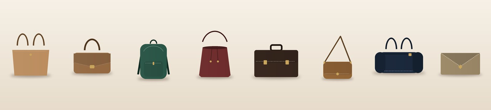

A good bag is something you use every single day, so a few minutes spent choosing the right one saves a lot of trouble later. After making and supplying bags since 1989, these are the things we always tell our customers to check.
Children carry heavy books, so look for padded shoulder straps, a padded back panel and a bag that is no wider than the child's back. Two main compartments help keep books and lunch boxes apart. Bright character designs are popular, but check the stitching at the strap joints, since that is where school bags usually fail first.
College students need space for a laptop, a charger, notebooks and a water bottle. Choose a backpack with a padded laptop sleeve, a side bottle pocket and water-resistant fabric. A plain, smart design also works for internships and interviews.
Hard-shell trolleys protect what is inside. Soft trolleys and duffels are lighter and easier to squeeze into tight spaces. Always check the wheels and the telescopic handle before you buy.
Leather and leather-finish office bags look professional and last for years. Make sure the laptop compartment is padded and fits your laptop size, and that there are enough pockets for documents, a diary and cables. A detachable shoulder strap makes daily travel easier.
Schools, institutions and companies often need the same bag in large numbers, sometimes with their own name or logo. Share your quantity, budget and delivery date early, so there is time to finalise the design, sample and branding. We take bulk, corporate, customised and private label orders, with delivery across India.
Need help choosing, or planning a bulk order? Tell us what you need.
Chat on WhatsApp